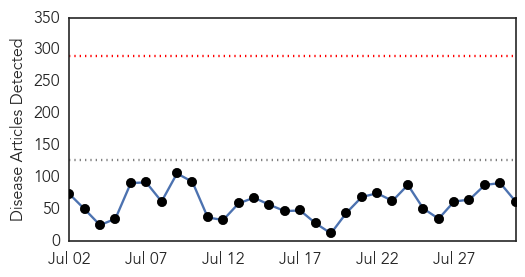
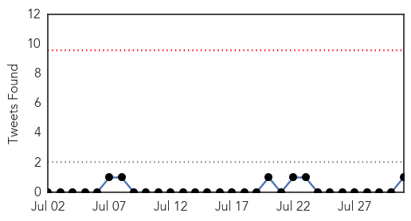

Unknown
30-Day Web Trend
0 alerts, 0 warnings

30-Day Twitter Trend
0 alerts, 0 warnings

Article Locations

Article Confidences
Top Articles:
- 0.997
- South Korea may not be declared MERS-free until September
- 0.996
- Your Top Legionnaires’ Disease Questions Answered
- 0.992
- OIE fears African Swine Fever will spread to Europe
- 0.990
- 46 Cases of Legionnaires' Disease Reported in the Bronx; 2 Dead
- 0.986
- 18 encephalitis deaths in Dibrugarh this year
- 0.984
- Climate Change Could be Culprit With Legionnaires' Disease on the Rise
- 0.982
- Salmonella cases tied to pork jump to 90
- 0.970
- What Pharmacists Can Do
- 0.964
- Suspected Manchester Mers cases prove negative
- 0.964
- City Officials Say 3rd Person Has Died « CBS New York
- 0.963
- Outbreak of Legionnaire's Disease Sickens 46 in NYC
- 0.936
- Legionnaires’ disease outbreak in New York, 2 dead
- 0.936
- ‘In the Lyme light’: 10 celebrities diagnosed with the painful tick-borne disease
- 0.935
- CDC Weighs in in Deadly Ohio Botulism Outbreak
- 0.929
- Washington Salmonella Outbreak Linked to Pork expands to 90 Cases
- 0.929
- South Bronx Legionnaires' disease outbreak: Contaminated cooling towers found
- 0.917
- Chicago Tribune
- 0.917
- Chicago Tribune
- 0.917
- Chicago Tribune
- 0.917
- Chicago Tribune
- 0.900
- Cornwall Standard Freeholder
- 0.839
- Bronx Legionnaires cases jumps to 46
- 0.830
- Flesh-eating bacteria kills Virginia fisherman
- 0.829
- Chester County Patient Tests Positive For Legionnaire's Disease
- 0.818
- More cases of leprosy are being reported in Florida
- 0.817
- barfblog
- 0.773
- CDC: 53 Million Adults In The US Live With A Disability
- 0.770
- Crusted scabies case prompts alert at Alberta Children’s Hospital
- 0.763
- At WCU, cleanup but not concern over Legionnaire's
- 0.752
- Some 11 people from Bulgaria’s Rila test positive for brucellosis (ROUNDUP)
- 0.749
- New York City finds Legionnaires bacteria at Lincoln Hospital
- 0.748
- Rhode Island Mandates 7th Graders Get Dangerous HPV Vaccine – Adverse Reactions Hidden from Parents
- 0.746
- BP Calls for Inspections After Third Legionnaires' Death in The Bronx
- 0.724
- Pattaya News, Communities, Opinions and much more...
- 0.709
- Dozens Sickened Amid 'Unusual' Legionnaires' Disease Outbreak in Bronx, 2 Dead …
- 0.687
- Water contamination: eight more taken ill in B.G. Hatti
- 0.677
- MH370 search: Serial number shows plane debris ‘from a Boeing 777’
- 0.661
- Standaard-Eurobarometer voorjaar 2015: de burgers vinden immigratie de grootste uitdaging voor de EU
- 0.654
- Area hospitals get mixed reviews for infection prevention
- 0.652
- On staph and swimming: experts advise proper precautions
- 0.649
- S. Korea tries to lure HK tourists back after MERS outbreak
- 0.647
- KZN medicine drought
- 0.636
- Continue to Protect Yourself, Loved Ones Against Lyme Disease
- 0.633
- Legionnaires’ disease bacteria found at 2 NYC buildings
- 0.627
- Cancer Drug Shows Promise in Flushing Out Reservoirs of HIV
- 0.627
- US to probe killing of Cecil the lion
- 0.627
- Two more Turkish police killed as PKK truce collapses
- 0.627
- Mixed messages from Russia, France on Mistral compensation deal
- 0.627
- Death of Mullah Omar reveals rift in Taliban command
- 0.624
- Vesicular stomatitis virus confirmed in S.D.
Showing top 50 articles...
Top Tweets:
- 0.571
- RT: Retour en images sur la finale du concours de chant en présence de et Mory Kanté http://t.c…
Measles
30-Day Web Trend
3 alerts, 0 warnings

30-Day Twitter Trend
0 alerts, 0 warnings

Article Locations

Article Confidences

Top Articles:
- 0.961
- States With the Best and Worst Vaccination Rates [Data]
- 0.940
- Measles: The New Red Scare
- 0.871
- Guinea-Bissau: 28,500 children vaccinated against measles
- 0.809
- Keep children vaccines current - IronMountainDailyNews.com
- 0.666
- Guinea-Bissau: Guinea-Bissau: 28,500 children vaccinated against measles
- 0.578
- California Law Mandates Vaccines for School-Age Children, No Belief Exemptions
- 0.556
- Vaccinations Have Always Been Controversial in America
- 0.535
- Few N.J. teens are getting the HPV vaccine and that's alarming health workers
Top Tweets:
-
No tweets found for Jul 31, 2015